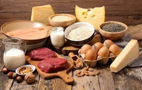
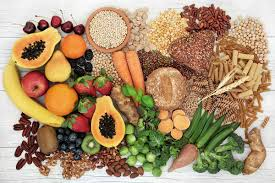
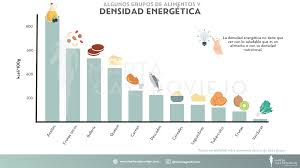

ENLACES MAS INFORMACION:


🔹La clave para adelgazar
🔹Índice
La mayoría de dietas fracasan porque se centran demasiado en contar calorías, pero es más fácil adoptar una dieta sana controlando la saciedad
El fallo que mucha gente todavía comete al hacer dieta es reducir sus comidas a platos que les dejan con hambre o que vuelven a abrirles el apetito al poco rato de terminar de comer. El objetivo que deberíamos perseguir es comer hasta sentirnos cómodamente saciados, y cada alimento nos lleva a ello de maneras distintas. Hay tres factores clave que afectan a la saciedad: la cantidad de proteínas, la fibra y la densidad energética.
- Cantidad de proteínas
- Fibra
- Densidad energética
Un filete de carne o pescado llena mucho más que un plato de lechuga o una rebanada de pan blanco. Está científicamente comprobado que cualquier comida que incluya una notable cantidad de proteínas sacia antes. Es decir, es probable que comas menos calorías si incluyes proteínas en el menú porque dejarás de comer antes al sentirse saciado más rápido.
Por ejemplo, un plato de sopa de verduras y fideos con pollo, huevo y/o garbanzos te dejará con el estómago satisfecho antes que si solo reduces el contenido del caldo a los dos primeros elementos. Y esa saciedad durará más tiempo, evitando que te asalte el hambre demasiado pronto. Por eso también es recomendable incluir proteínas de calidad en el desayuno, la merienda o la cena.

Tambien hay diversos estudios que apuntan a que una dieta rica en fibra tiende a reducir el apetito y la ingesta calórica general. Los alimentos ricos en fibra dietética, especialmente las solubles y más viscosas como pectinas y glucanos, aumentan la saciedad. Los cereales integrales nos llenan antes, también cualquier plato rico en verduras, legumbres o un menú que incluya frutas, mejor con piel.

Este último factor tiene algo más de enjundia, pero es muy fácil de entender: la densidad energética de un alimento es el número de calorías que tiene por cada gramo. El rango se mueve entre las 0 calorías del agua y las 900 calorías del aceite vegetal.
¿Los alimentos con menos agua son más calóricos?
Las grasas tienen una densidad energética mucho mayor: 1 g de grasa aporta 9 calorías, mientras que 1 g de proteína o de carbohidrato tiene 4 calorías. Los alimentos con menos cantidad de agua tienen una mayor densidad energética, que aumenta aún más si contienen una gran cantidad de proteínas, hidratos o, sobre todo, grasas.

| Calorias por alimento |
| Alimento | Crudo | Hervido | Plancha | Horno | Frito |
| Pollo | 110kcal | 120kcal | 130kcal | 150kcal | 220kcal |
| Huevo | 155kcal | 160kcal | 170kcal | 175kcal | 220kcal |
| Patatas | 77kcal | 86kcal | 95kcal | 120kcal | 300kcal |
| Pescado blanco | 80kcal | 90kcal | 100kcal | 120kcal | 200kcal |
Le agradeceríamos que completara el siguiente formulario, correspondiente a un estudio sobre la alimentación de la población de las diferentes comunidades autonomas de España.
Su participación es voluntaria y sus respuestas serán tratadas de forma confidencial.
Agradecemos de antemano su colaboración, que será de gran ayuda para el desarrollo de este estudio.
Rellenar formulario
Ante cualquier duda puede consultar al siguiente número: 234 56 78 90
Víctor Magdaleno Sánchez